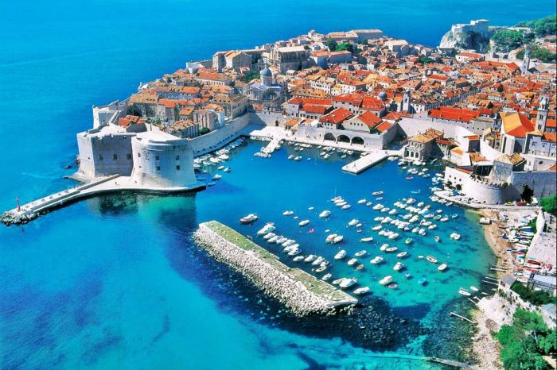
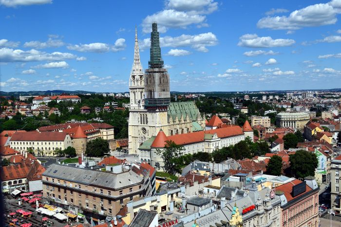
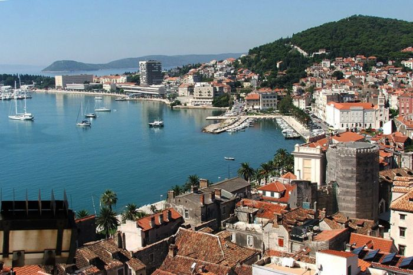

Osijek

Osijek is the fourth largest city in Croatia with a population of 108,048 in 2011. It is the largest city and the economic and cultural centre of the eastern Croatian region of Slavonia, as well as the administrative centre of Osijek-Baranja County. Wikipedia
| Area | 169 km² |
| Population | 108,048 (2011) UNdata |
| University | Josip Juraj Strossmayer University of Osijek |
Rovinj

Rovinj is a Croatian fishing port on the west coast of the Istrian peninsula. The old town stands on a headland, with houses tightly crowded down to the seafront. A tangle of cobbled streets leads to the hilltop church of St. Euphemia, whose towering steeple dominates the skyline. South of the old town is Lone Bay, one of the area’s pebble beaches. The Rovinj archipelago’s 14 islands lie immediately off the mainland. Wikipedia
| Area | 88 km² |
| Population | 14,294 (2011) UNdata |
| Map | Map data ©2016 Google |
| Interesting places |
Dubrovnik
Dubrovnik is a city in southern Croatia fronting the Adriatic Sea. It's known for its distinctive Old Town, encircled with massive stone walls completed in the 16th century. Its well-preserved buildings range from baroque St. Blaise Church to Renaissance Sponza Palace and Gothic Rector’s Palace, now a history museum. Paved with limestone, the pedestrianized Stradun (aka Placa) is lined with shops and restaurants. Wikipedia
| Area | 21,35 km² |
| Population | 42,615 (2011) UNdata |
| Interesting places | StradunLokrum |
| University | The University of Dubrovnik |
Zagreb
Zagreb, Croatia’s northwestern capital, is distinguished by its 18th- and 19th-century Austro-Hungarian architecture. At its center, Upper Town is the site of the Gothic, twin-spired Zagreb Cathedral, 13th-century St. Mark’s Church and cafe-lined pedestrian Tkalčićeva Street. Lower Town contains the city's main square, Ban Jelačić, as well as shops, museums and parks. Wikipedia
| Area | 641 km² |
| Population | 108,048 (2011) UNdata |
| Area Code | 31 |
| University | The University of Zagreb |
| Interesting places | Trg bana Jelačića, Museum of Broken RelationshipsJarun |
Split
Split, a town on Croatia’s Dalmatian Coast, is known for its beaches and the fortresslike complex at its center, Diocletian's Palace, erected by the Roman emperor in the 4th century. Once home to thousands, its sprawling remains include more than 200 buildings. Within its white stone walls and under its courtyards and galleries are shops, bars, cafes, cathedrals, hotels and several houses. Wikipedia
| Area | 169 km² |
| Population | 108,048 (2011) UNdata |
| Area Code | 31 |
| University | Josip Juraj Strossmayer University of Osijek |
Varaždin

Varaždin is a city in Northern Croatia, 81 km north of Zagreb on the highway A4. The total population is 46,946, with 38,839 on 34.22 km² of the city settlement itself. Wikipedia
| Area | 59,45 km² |
| Population | 46,946 (2011) UNdata |
Pula

Pula, a seafront city on the tip of Croatia’s Istrian Peninsula, is known for its protected harbor, long, beach-lined coast and Roman ruins. Founded as early as the 10th century B.C.E. and valued for its strategic location, Pula has been occupied, destroyed and rebuilt numerous times, including by the Romans, Ostrogoths and Venetians, as well as the Allied Forces. Wikipedia
| Area | 51,65 km² |
| Population | 57,467 (2011) UNdata |
| Interesting places |